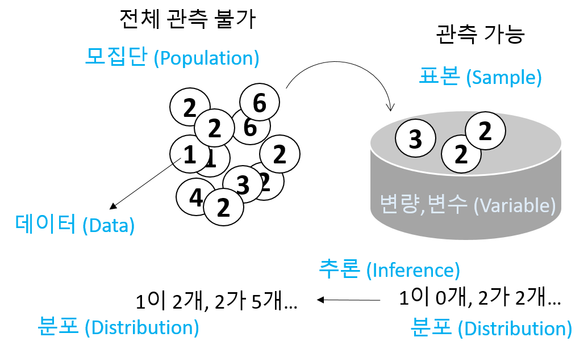
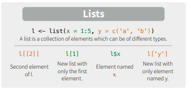
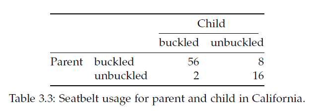
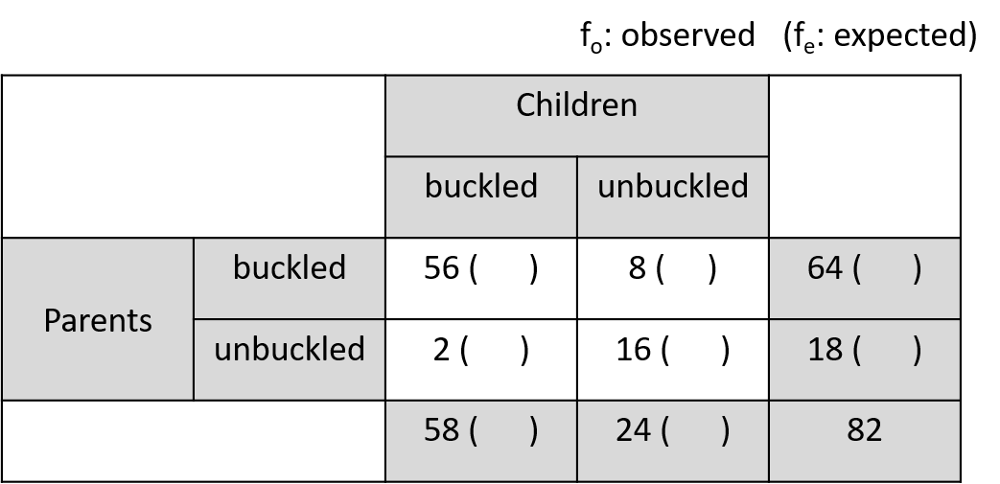

Chapter 3 Basic Statistics
3.1 Univariat data
- Statistics: 데이터 분석을 통한 예측. 즉, 데이터를 수집, 정리하여 이로부터 미지의 사실에 대한 신빙성 있는 추론을 수행하는 과정

- Univariate (단변량): Single variable
\[ x_1, x_2, ..., x_n \]
- 데이터의 속성에 따른 구분
- 범주형 - 질적 데이터, 숫자로 나타낼 수 있으나 의미 없음
- 명목형 (Nominal) - 사람 이름
- 순서형 (Ordinal) – 달리기 도착 순서
- 수치형 - 숫자로 나타내며 데이터 속성을 그대로 지님님
- 구간형 (Interval) – 선수1, 선수2 종점통과 시간
- 비율형 (Ratio) – 출발시간 기준 종점 통과 시간

- Data type in R
- Numeric data types (수치형)
- Discrete (이산형) data - 카운트, 횟수
- Continuous (연속형) data - 키, 몸무게, Cannot be shared
- Factors data - 혈액형, 지역 (범주형)
- Character data - ID, 이름 (범주형)
- Logical data - 참, 거짓 (논리형)
- Numeric data types (수치형)
3.1.1 Vectors for univariate data
- Using combine function
#The number of whale beachings in Texas during the 1990s
whale <- c(74, 122, 235, 111, 292, 111, 211, 133, 156, 79)
#Object `whale` is a data vector == (univariate) data set
# The size
length(whale)
sum(whale)
sum(whale)/length(whale)
mean(whale)- Vectorization
- Adding values to a vector variable
- Missing/NULL values
- NA: Not available, The value is missing
- NULL: a reserved value
- NaN: Not a number (0/0)
- Inf: (1/0)
- Attributes: names in data vectors
head(precip)
class(precip)
length(precip)
names(precip)
order(names(precip))
test_scores <- c(100, 90, 80)
names(test_scores) <- c("Alice", "Bob", "Shirley")- Indexing
3.1.2 Data type
- Numeric data
class(1)
class(pi)
x <- seq(1,5,by=1)
class(x)
seq(0, 100, by=10)
seq(0, 100, length.out=11)
?seq
rep(5, times10)
rep(1:3, times=4)- Character data
3.1.2.1 Exercise
seq또는rep함수를 사용해서 다음 서열들을 만들고x변수에 저장하시오- “a”, “a”, “a”, “a”, “a”
- 1, 3, 5, 7, …, 99
- 1, 1, 1, 2, 2, 2, 3, 3, 3
- 1, 2, 3, 4, 5, 4, 3, 2, 1
Combining strings - paste function
paste("X", 1:10)
paste("X", 1:10, sep="")
paste("The", "quick", "brown", "fox")
paste(c("The", "quick", "brown", "fox"))
paste(c("The", "quick", "brown", "fox"), collapse=" ")
x <- 1:10
paste(x)
paste(x, collapse=":")Factors
Adding a level
Logical data
* TRUE and FALSE
* “is” functions
* Comparison by <, <=, ==, !=, >=, >
* Combination by !, &, |
3.1.2.2 Exercise
다음은 신생아들의 키를 나타내는 dataset 이다. 오류 값을 찾아내고 이들 값을 NA로 바꾼 후 평균 값을 구하시오 (babies 데이터셋은 UsingR 패키지에 있으며 오류값은 999 입니다)
3.1.3 Use of functions
Function 정의
사용법
- 용어
- function name:
my_sine - parameter:
x - argument:
pi - return value:
y
- function name:
평균 계산하는 함수 my_mean
head(rivers)
my_mean <- function(x){
total <- sum(x)
n <- length(x)
return(total/n)
}
my_mean(rivers)3.1.3.1 Exercise
평균과의 거리를 계산하는 get_dist 함수를 작성하고 rivers 데이터에 사용하시오
3.1.3.2 Exercise
강수량 데이터 precip에서 연평균 강수량이 50 이상인 도시를 뽑고 해당 도시들의 강수량에 따라서 순서대로 나열하시오
3.1.4 Numeric summaries


- 대푯값 (요약값)
- Center – commonly known as “average” or “mean” but not the only one.
- median, mode, etc
- Spread – Variability of a data set.
- No variability – mean is everything
- Large variability – mean informs much less
- confidence of interpretation from knowing center
- Distance from center
- Shape – Degree of interpretation from knowing center and spread.
- eg. bell shape – two sides are equally likely, large values are rather unlikely and values tend to cluster near the center.
3.1.5 Center for a univariat variable

3.1.5.1 Sample mean
\[ \bar{x} = \frac{1}{n} (x_1 + x_2 + ... + x_n) = \frac{1}{n}\sum_i{x_i} \]
- Robustness
3.1.6 Spread for a univariat variable

Range - the distance between the smallest and largest values
Sample variance \[\begin{equation} s^2 = \frac{1}{n-1}\sum_i(x_i - \bar{x})^2 \end{equation}\]
Sample standard deviation
- 측정값들이 평균에서 떨어진 정도 \[\begin{equation} \sqrt{s^2} = \sqrt{ \frac{1}{n-1}\sum_i(x_i - \bar{x})^2 } \end{equation}\]
wts <- kid.weights$weight
var(wts)
sd(wts)
plot(wts)
boxplot(wts)
hist(wts)
hist(wts, breaks = 50)
hist(wts, 50)
abline(v=mean(wts), col="red")- Interquartile range (IQR)
- Middle 50% of the data
- Difference between Q3 and Q1

3.1.7 Shape for a univariat variable
- Symmetry and skew
\[\begin{equation} \text{sample skewness} = \sqrt{n} \frac{\sum{(x_i - \bar{x})^2}}{(\sum{(x_i - \bar{x})^2)^{3/2}}} = \frac{1}{n}\sum{z_i^3} \end{equation}\]
myskew <- function(x){
n <- length(x)
z <- (x-mean(x))/sd(x)
return(sum(z^3)/n)
}
wts <- kid.weights$weight
hist(wts, 50)
myskew(wts)
z <- rnorm(length(wts))
hist(z, br=50)
myskew(z)- Sample excess kurtosis
- Measure of tails
\[\begin{equation} \text{sample excess kurtosis} = n \frac{\sum{(x_i - \bar{x})^4}}{(\sum{(x_i - \bar{x})^2)^2}} -3 = \frac{1}{n}\sum{z_i^4} - 3 \end{equation}\]
3.1.8 Viewing the shape
3.1.8.1 Histogram
도수분포표를 나타낸 그림으로 데이터를 특정 범위의 그룹으로 짝짓고 해당 범위와 그룹의 크기에 해당하는 막대를 그린 그래프입니다.
x <- faithful$waiting
hist(x)
hist(x, breaks = 1000)
hist(x, breaks = 20, freq=FALSE)
hist(x, breaks = 20, freq=FALSE, main="Histogram")
hist(x, breaks = 20, freq=FALSE, main="Histogram", xlim=c(0, 100))
hist(x, breaks = 20, freq=FALSE, main="Histogram", xlim=c(0, 100), ylim=c(0, 0.1))히스토그램은 center (mean, median), spread (Variance, IQR), shape (tail)을 모두 볼 수 있는 그래프입니다. 그리는 방법은 전체 범위의 데이터가 포함되도록 범위를 정하고 동일 같격으로 구분되는 계급의 개수를 정한 후 해당 계급에 속하는 데이터의 개수를 세어 도수를 구합니다. 다음은 도수 분포표를 만드는 코드 입니다.
3.1.8.2 Density plots
히스토그램을 갖는 하나의 단변량 변수가 있을 때 특정 값이 선택될 확률은 히스토그램의 해당 계급의 도수값을 전체로 나눈 값이라고 할 수 있습니다. 그런나 연속적인 구간이나 시간의 경우에는 히스토그램보다는 density plot이 요약값을 보기에 더 적합합니다.
wts <- kid.weights$weight
xrange <- range(wts)
den <- density(wts)
plot(den, xlim=xrange, xlab="densities", main="")
3.1.8.3 Boxplots
상자그림 또는 상자 수염 그림으로 불리는 boxplot은 다섯개의 주요 요약값을 (min, max, Q1, Q3, and median) 보여주며 대규모 데이터를 한 눈에 비교할 수 있는 좋은 방법 입니다.
- Boxplot
x <- 0:5
quantile(x)
boxplot(x)
text(x=1.3, y=quantile(x, 0.25), labels = "1사분위수")
text(x=1.3, y=quantile(x, 0.5), labels = "2사분위수")
text(x=1.3, y=quantile(x, 0.75), labels = "3사분위수")
boxplot(kid.weights)
boxplot(kid.weights$weight)
#install.packages("vioplot")
library(vioplot)
vioplot(kid.weights)
vioplot(kid.weights, col=c("#3CAEA3", "#F6D55C", "#ED553B"), rectCol=c("gray"), main="Kids")
?vioplot
#console
par(mfrow=c(1,2))
plot(density(kid.weights$weight))
vioplot(kid.weights$weight)3.2 Bivariate data
두 변수를 동시에 고려할 경우 각 변수가 가지고 있는 데이터를 비교하여 변수간의 유사성이나 관계 (상관, 독립)에 대한 설명하는 방법을 소개하며 짝데이터 (Paired data)나 범주형 데이터의 경우에 두 변수의 관계를 어떻게 설명하는지 알아봅니다. 또한 그래프를 이용하여 두 변수의 관계를 가시화 하는 방법에 대해 알아보겠습니다.
3.2.1 Independence samples
두 변수간의 관계를 설명할 때 가장 일반적인 경우의 데이터 형태는 코흐트 데이터 입니다. 처리군과 대조군으로 이루어진 데이터를 말하며 플라시보 (Placebo effect) 효과를 방지하기 위해서 실제 효과는 없지만 대조군에 처리한 조건과 동일한 조건의 처리를 수행합니다.
위 데이터는 비트의 효과를 검증하기 위해 각 실험자의 달리는 시간을 측정하고 비교한 데이터 입니다. 이 데이터를 보고 알 수 있는 사실은 무엇입니까?
3.2.2 Data comparison with plots
두 변수에 대한 관계를 가장 먼저 그리고 가장 직관적으로 설명하는 방법은 그래프 입니다. boxplot에서는 앞에서 배운바와 같이 다섯 가지 요약값을 볼 수 있습니다. 1사분위수, 2사분위수(중간값), 3사분위수, 그리고 최대, 최소값입니다. 여기서 최대 최소는 3사분위수 또는 1사분위수에서 IQR 1.5배에 해당하는 하위 또는 상위 값으로 그 범위를 벗어나는 값들은 outlier로 취급합니다.
Density plot은 histogram과 비슷하게 데이터의 center, spread, 그리고 shape를 모두 보여주는 높은 활용도 때문에 많이 사용되는 그래프 입니다. density 함수는 밀도함수를 추정하고 주어진 범위의 x값과 그에 대한 y값을 반환해주며 plot 함수를 이용하여 x와 y위치에 점이나 선을 그려주어 그래프를 완성합니다.
library(UsingR)
head(michelson)
?michelson
str(michelson)
speed <- michelson$Speed
expt <- michelson$Expt
fourth <- speed[expt == 4]
fifth <- speed[expt == 5]
d4 <- density(fourth)
d5 <- density(fifth)
xrange <- range(c(d4$x, d5$x))
yrange <- range(c(d4$y, d5$y))
plot(d4, xlim=xrange, ylim=yrange, main="")
lines(d5, lty=2)
legend(650, 0.008, legend=c("Fourth", "Fifth"), lty=c(1,2))3.2.3 Data manipulation
3.2.3.1 List
R언어에서 두 변수를 담을 수 있는 데이터 타입은 list와 data frame 두 종류가 있습니다. list 변수 타입은 vector 형태의 여러개의 element를 가질 수 있으며 각 element의 데이터는 문자나 숫자 어떤 데이터 타입도 가능하며 각 element vector의 길이가 모두 달라도 됩니다. list의 인덱싱에서 [ ]는 리스트를 반환하고 [[ ]]는 vector element들을 반환합니다.
b <- list(beets = beets, "no beets"=no_beets)
b$beets
b[1]
b[[1]]
class(b[1])
class(b[[1]])
boxplot(b)
3.2.3.2 Exercise
다음 데이터를 list 타입의 변수, record에 저장하고 boxplot을 이용해서 비교하시오
- marsha: 25, 0, 45, 90, 0, 10, 60, 25
- bill: 30, 30, 30, 30, 20, 10, 15, 20
3.2.3.3 Data frame
data.frame 타입 변수는 list와 같은 기능의 타입으로 볼 수 있지만 모든 element 들이 같은 길이를 갖는다는 것이 다릅니다. 따라서 2차원 메트릭스 형태로 표현될 수 있으며 matrix와 같이 [가로, 세로] 방식으로 인덱싱 할 수 있습니다. 각 row는 샘플을 나타내고 column은 하나의 변수를 타나냅니다. R 기반의 데이터 분석에서는 가장 선호되는 데이터 타입이라고 볼 수 있습니다.
id <- 1:10
name <- paste("Name", id, sep="")
grade <- LETTERS[sample(1:5, size=length(id), replace=T)]
student <- data.frame(id, name, grade)
student
str(student)
student$id
student[,1]
class(student$name)
class(student)
class(student[,1])
class(student$id)
student <- data.frame(id, name, grade, stringsAsFactors = F)
str(student)
?data.frame3.2.3.4 Model formulas
R에서는 두 개 (이상의) 변수의 관계를 수학적으로 표현하기 위한 방법을 제공하며 다양한 모형에서 공통적으로 사용될 수 있습니다.
\[ response(s) \sim predictor(s) \]
beets
no_beets
runtime <- c(beets, no_beets)
nitrate <- c(rep("beets", length(beets)), rep("nobeets", length(no_beets)))
food.sports <- data.frame(runtime, nitrate)
boxplot(runtime~nitrate, data=food.sports)
head(michelson)
boxplot(michelson$Speed ~ michelson$Expt)
boxplot(Speed ~ Expt, data=michelson)R에서 plot함수는 Generic function으로서 입력 파라메터가 갖는 데이터 타입에 따라서 다른 기능을 수행할 수 있습니다. 예를 들어 formula type으로 \(x \sim f\) 가 들어갈 경우 그룹별로 boxplot을 나란히 그려주며 따라서 그룹별로 데이터가 얼마나 다른지 한 눈에 비교할 수 있습니다.
plot(Speed ~ Expt, data=michelson)
out <- summary(Speed ~ Expt, data=michelson)
plot(out)
plot(michelson$Speed)
plot(michelson$Speed, main="Speed", ylab="Speed", bty="l", pch="*", cex=2, col="red")
?pch

split 함수의 경우 data를 정의된 그룹으로 나누고 list 타입으로 반환해줍니다. 그룹은 factor 형으로 정의된 변수에 저장되어 있어야 합니다.
?split
speeds <- split(michelson$Speed, michelson$Expt)
names(speeds) <- paste("Expt", 1:5, sep="")
speeds
speed <- michelson$Speed
expt <- michelson$Expt
speed
expt
speeds <- list(speed[expt==1], speed[expt==2], speed[expt==3], speed[expt==4], speed[expt==5])
names(speeds) <- paste("Expt", 1:5, sep="")
speeds3.2.4 Paired data
paired data는 두 종류의 변수에 대한 데이터를 하나의 샘플로 부터 얻을 때의 데이터를 말합니다. 본 단원에서 두 변수의 데이터형은 연속형과 연속형, 또는 연속형과 범주형의 경우로 다음 단원에서 범주형과 범주형에 대한 경우의 두 변수간 관계를 설명하겠습니다.
예를 들어 한 학생으로부터 얻어진 키와 몸무게 데이터가 paired data가 될 수 있습니다. paired data는 보통 다음과 같은 형태를 취하고 있습니다.
\[ (x_1, y_1), (x_2, y_2), ..., (x_{252}, y_{252}) \]
걸리버 여행기라는 (1726) 소설이 나올 무렵의 사람들은 손목과 목, 허리 둘래가 항상 일정 비율로 비례하는 것을 알고 있었는데 이를 Lilliputians’ hypothesis라고 합니다. 이를 fat 데이터를 통해 알아 봅니다.

UsingR 패키지의 fat 데이터는 252명의 남성으로부터 얻어진 다른 신체 부위의 측정 값을 제공하고 있으며 fat index를 예측하기 위한 목적으로 사용될 수 있습니다. 본 강의에서는 neck과 wrist 두 변수간의 관계를 설명하기 위한 데이터로 사용됩니다.
library(UsingR)
class(fat)
head(fat)
names(fat)
neck_pair <- fat$neck
wrist_pair <- fat$wrist
mean(neck_pair/wrist_pair)
mean(neck_pair)/mean(wrist_pair)
plot(neck_pair, wrist_pair)손목과 목 둘레를 측정한 데이터의 대표값 (평군)을 이용하여 두 변수 사이의 비율을 계산해 보면 2.084로 거의 두 배의 비율을 보입니다. 짝 데이터가 아닌 경우의 비율은 어떻게 될지 계산해 보면 아래와 같이 2.08로 비슷한 값이 구해집니다. 그러나 plot을 사용해서 산점도를 그려보면 nopair 데이터의 경우 두 변수의 상관성이 사라지는 것을 알 수 있습니다. 이것이 의미하는 바는 같은 사람에게서 얻은 짝데이터로만 손목과 목둘래가 비례한다는 정보를 알 수 있다는 것 입니다. 즉, 아무리 평균으로 2배의 차이가 있다고 할지라도 짝데이터 없이는 손목 둘래가 큰 사람이 목 둘래도 크다라고 말할 수 없다는 것 입니다.
neck_nopair <-sample(fat$neck)
wrist_nopair <- sample(fat$wrist)
mean(neck_nopair)/mean(wrist_nopair)
mean(neck_nopair/wrist_nopair)
plot(neck_nopair, wrist_nopair)3.2.4.1 Pearson Correlation
상관 또는 상관계수는 두 변수의 선형적 관계를 정량적으로 나타내는 척도입니다. 상관계수의 값이 0일 경우 두 변수는 독립 (independence)이라고 할 수 있고 선형 관계에 대해서만 사용됩니다.
x <- fat$wrist
y <- fat$neck
plot(x, y)
abline(v = mean(x), lty=2)
abline(h = mean(y), lty=2)
points(mean(x), mean(y), pch=16, cex=4, col="#00000055")
abline(lm(y~x))공분산 (covariance)와 상관 (correlation)은 데이터의 중앙을 기준으로 4개의 구역에 각 데이터가 흩어진 정도를 정량화 한 것이며 다음과 같이 정의됩니다.
\[ cov(x, y) = \frac{1}{n-1} \sum{(x_i-\bar{x})(y_i-\bar{y})} \]
\[ cor(x, y) = \frac{1}{n-1} \sum{(\frac{x_i-\bar{x}}{s_x})(\frac{y_i-\bar{y}}{s_y})} = cov(x,y)/(s_x s_y)\]
3.2.4.2 Spearman correlation coefficient
피어슨 상관계수는 선형적 관계에 대한 정량화만 가능한 반면 spearman 상관계수는 선형관계 뿐만 아니라 비선형 적인 관계에 대해서도 단조 증가나 감소에 대한 정보를 측정할 수 있는 measure 입니다. 이는 데이터의 값 자체를 사용하기 보다는 데이터를 rank 값으로 변환한 후 상관성을 비교하기 때문에 가능한 기능입니다.
from wiki
x <- Animals$body
y <- Animals$brain
cor(x, y)
plot(x, y)
Animals
cor(rank(x), rank(y))
cor(x, y, method="spearman") Animals 데이터에서 correlation 값이 낮은 이유는 공룡과 같이 뇌 무게에 비해 비정상적으로 큰 몸무게 값을 갖는 개체들 때문입니다.
- Example: 공룡을 제외한 correlation을 구하시오
일반적으로 분석의 신뢰성을 높이기 위해 실험 반복을 통해 데이터를 수집합니다. 그런데 가끔은 전체 반복 데이터를 모두 사용해서 상관계수를 구하는 값보다 각 반복 데이터의 평균에 대한 상관 계수를 구랗 때 더 높은 상관 관계를 확인할 수 있습니다.
3.2.4.3 Exercise
UsingR 패키지의 fat에는 체지방 데이터와 BMI 스코어가 body.fat과 BMI에 저장되어 있다. 두 변수의 관계를 나타내는 산포도를 그리고 상관계수를 구하시오.
3.2.4.4 Exercise
batting(UsingR) 데이터는 2002년 메이저리그 통계자료이다. 스트라이크아웃 (SO)와 홈런 (HR)의 상관계수를 구하고 산점도를 그리시오.
3.2.5 Bivariate categorical data
두 종류의 짝데이터가 모두 범주형일 경우에 그 연관성을 정량화하는 방법에 대해서 알아보겠습니다.
3.2.5.1 Contingency tables
범주형 데이터에는 summarized 된 데이터와 unsummarized 된 데이터가 있을 수 있으며 두 경우에 분석하는 전략이 다를 수 있습니다. 일반적으로 범주형 데이터는 각 샘플의 그룹 정보를 표시하여 나타내며 분석을 위해서는 이러한 그룹 정보를 기준으로 각 그룹에 해당하는 샘플의 갯수를 카운팅하여 contingency table (분할표)로 변환하여 분석을 수행하게 됩니다. 두 범주형 변수의 경우는 two-way contingency table로 나타낼 수 있습니다.

R에서는 다음과 같은 다양한 방법으로 테이블을 만듭니다.
rbind(c(56,8), c(2,16))
cbind(c(56,2), c(8,16))
seatbelts <- matrix(c(56, 2, 8, 16), nrow=2)
rownames(seatbelts) <- c("buckled","unbuckled")
colnames(seatbelts) <- c("buckled","unbuckled")
seatbelts
rownames(seatbelts) <- c("pa_buckled","pa_unbuckled")
colnames(seatbelts) <- c("ch_buckled","ch_unbuckled")
seatbelts
dimnames(seatbelts) <- list(parent=c("buckled","unbuckled"),
child=c("buckled","unbuckled"))
seatbeltsUnsummarized 데이터의 경우는 다음과 같이 table함수를 사용하여 해당 범주에 속하는 데이터의 갯수를 카운팅하고 테이블을 만듭니다.
3.2.5.2 Marginal distributions
분할표를 이용한 두 범주형 변수의 연관성을 정량화 하기 전에 알아야할 두 가지 개념 중 하나는 주변분포 (marginal distribution)이고 다른 하나는 조건부분포 (conditional distributoin) 입니다. two-way 테이블은 두 개의 변수에 대한 요약 정보를 나타내며 각 변수들의 분표를 독립적으로 정량화 한 경우를 주변분포라고 합니다. R에서는 colSums, rowSums 또는 margin.table을 이용하여 계산 할 수 있습니다.
3.2.5.3 Conditional distributions
조건부 분포는 분할표의 하나의 row에 대해서 다른 row와 비교하는 경우를 생각하면 됩니다. 즉 위 안전벨트 데이터에서 부모가 벨트를 맬 경우와 매지 않을 경우 각각에 대한 아이들의 벨트 착용 비율을 말합니다.
\[ p(C=b|P=b) = \frac{p(C=b, P=b)}{p(P=b)} \]
R에서는 Marginal 분포 값으로 각 해당하는 cell의 값을 나누어 비율을 계산할 수 있습니다. Seatbelt 데이터의 경우 부모가 벨트를 착용할 경우 아이들이 착용하는 비율이 0.875이고 부모가 착용하지 않을 때 아이들이 착용하는 비율은 0.11로 차이가 보임을 알 수 있습니다.
prop.table(seatbelts)
seatbelts/sum(seatbelts)
prop.table(seatbelts, margin=1)
prop.table(seatbelts, margin=2)R 이 제공하는 xtabs 함수를 사용하면 위와 같은 계산을 쉽게 할 수 있습니다. 다음 Fingerprints 데이터는 whorls 와 Loops의 갯수의 조합에 해당하는 사람들의 수를 세어놓은 데이터입니다. NA를 제외하고 테이블을 만들기 위해서는 각 카테고리별로 테이블을 나누고 해당 cell에 맞는 값을 할당하는 복잡한 과정이 필요하지만 xtabs 함수를 사용하면 위 과정을 쉽게 수행할 수 있습니다.
head(Fingerprints)
tail(Fingerprints)
## without xtabs
idx <- !is.na(Fingerprints$count)
Fingerprints[idx,]
whorls <- rep(Fingerprints$Whorls[idx], Fingerprints$count[idx])
loops <- rep(Fingerprints$Loops[idx], Fingerprints$count[idx])
table(whorls, loops)
## with xtabs
xtabs(count ~ Whorls + Loops, Fingerprints)
xtabs(count ~ ., Fingerprints)xtabs의 formula에 count 데이터가 없을 경우 공란으로 비워두면 자동으로 해당되는 범주의 갯수를 계산해서 분할표를 만들어줍니다.
3.2.5.4 Measures of association for categorical data
타이타닉 데이터에서 객실 등급과 생존율의 그룹별 사람수를 보면 다음과 같이 등급별로 생존 비율이 크게 다른 패턴을 가짐을 알 수 있습니다. 이는 두 변수가 서로 상관되어 있음을 의미하는데 비록 이 변수들이 숫자형 변수는 아니지만 자연스럽게 그룹별로 정렬될 수 있고 따라서 그룹별 비율을 비교하므로써 상관성에 대한 유무를 판단할 수 있습니다.
Kendal tau correlation은 concordant/discordant pair를 이용한 정량적 연관성 측정값으로 다음과 같이 계산 할 수 있습니다. 특정 관측 데이터 pair (x1, y1)과 (x2, y2)가 있을 때 x1과 y1이 x2, y2에 비해서 둘 다 높은 (또는 낮은) rank에 위치할 경우 concordant 하다고 하며 반대로 x2 또는 y2 둘 중 하나는 높으나 다른 하나는 낮은 또는 그 반대인 경우 discordant 한 것으로 정의 됩니다. 피어슨 상관성과 같은 -1부터 1사이의 값을 가지며 0은 연관이 전혀 없는 경우를 말합니다.
\[ \tau = \frac{Number ~ of ~ concordant ~ pair - Number ~ of ~ discordant ~ pair}{n(n-1)/2} \]
y <- rep(titanic$Survived, titanic$Freq)
y <- ordered(y)
x <- rep(titanic$Class, titanic$Freq)
x <- ordered(x)
as.numeric(y)
as.numeric(x)
cor(as.numeric(y), as.numeric(x), method="kendall")The chi-squared statistics 는 가장 널리 쓰이는 범주형 자료의 연관성 척도로 다음과 같이 정의됩니다. 수식의 “o”와 “e”는 각각 관측값과 예측값을 나타냅니다. 이 값이 클 경우 연관이 크다는 것이고 크고 작음에 대한 검증은 10장에서 다시 다루기로 합니다.
\[ chi-squared ~ statistic = \sum \frac{(f_o - f_e)^2}{f_e} \]
seatbelt 데이터 부모와 아이들의 안전벨트를 매는 두 사건 (변수)가 독립이라면 \(p(C, P) == p(C)p(P)\) 즉, 결합확률이 각 확률을 곱한 것과 같고 기대값은 확률 x 전체 사건의 수(\(N\)) 이므로 다시 적으면 \(N p(C,P) == N p(C)p(P)\) 입니다. 여기서 \(N p(C,P)\)는 우리가 관측한 값으로 볼 수 있고 \(N p(C) p(P)\)는 독립을 가정한 상태에서 기대값이라고 볼 수 있습니다.

seatbelts <- matrix(c(56, 2, 8, 16), nrow=2)
rownames(seatbelts) <- c("pa_buckled","pa_unbuckled")
colnames(seatbelts) <- c("ch_buckled","ch_unbuckled")
seatbelts
fo <- seatbelts
fo
## marginal probability
margin_rows <- rowSums(fo)/sum(fo)
margin_cols <- colSums(fo)/sum(fo)
fe <- matrix(0, 2, 2,)
rownames(fe) <- rownames(fo)
colnames(fe) <- rownames(fo)
## expected numbers
fe[1,1] <- sum(fo)*margin_rows[1]*margin_cols[1]
fe[1,2] <- sum(fo)*margin_rows[1]*margin_cols[2]
fe[2,1] <- sum(fo)*margin_rows[2]*margin_cols[1]
fe[2,2] <- sum(fo)*margin_rows[2]*margin_cols[2]
sum((fo-fe)^2 / fe)
## use chisq.test function
chisq.test(fo, correct=F)3.2.5.5 Exercise
UScereal 데이터셋은 미국 식료품점의 선반에 진열된 시리얼 제품의 정보에 대한 데이터임. 시리얼 생산 브랜드와 (UScereal$mfr) 디스플레이되는 floor 층 수 (UScereal$shelf) 관계를 나타내는 테이블을 구해서 tbl 변수에 저장하고 출력하시오
브랜드와 진열 층 수와의 관계를 barplot으로 표현하시오
테이블의 각 cell 별 기대값을 구하고 chisqure 값을 구하시오